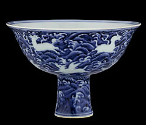

Ming porcelain
Ming dynasty blue and white porcelain stem cup
The Ming dynasty emperors encouraged the production of high quality ceramics. They established special kilns whose products were kept for the emperor and his court. The most famous of the new types of ceramics were the 'blue and white' wares. Porcelain is a special type of ceramic. It is delicate but also very hard. The Chinese kept the method of making porcelain a secret for many hundreds of years. Porcelain was very much admired in Europe but it was not until 1708 that they could make hard-paste porcelain themselves. Europe lagged behind China in the mass production of porcelain by almost 1,000 years. |